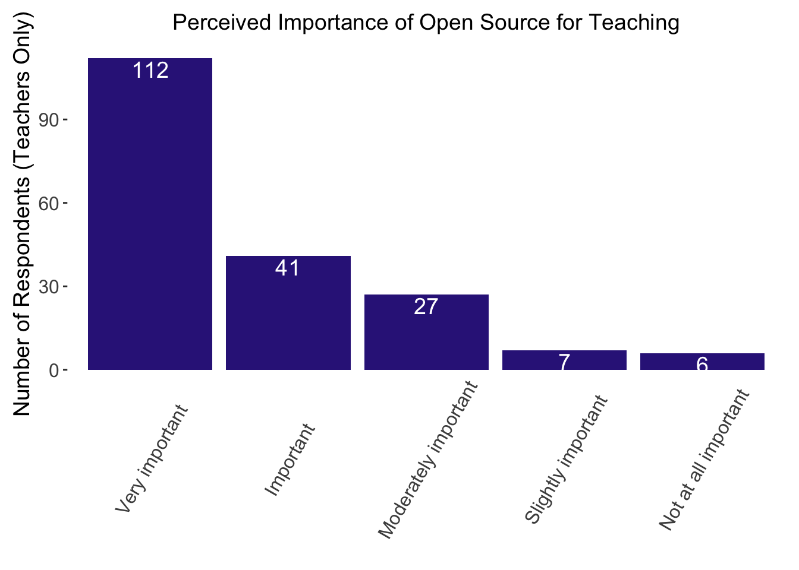
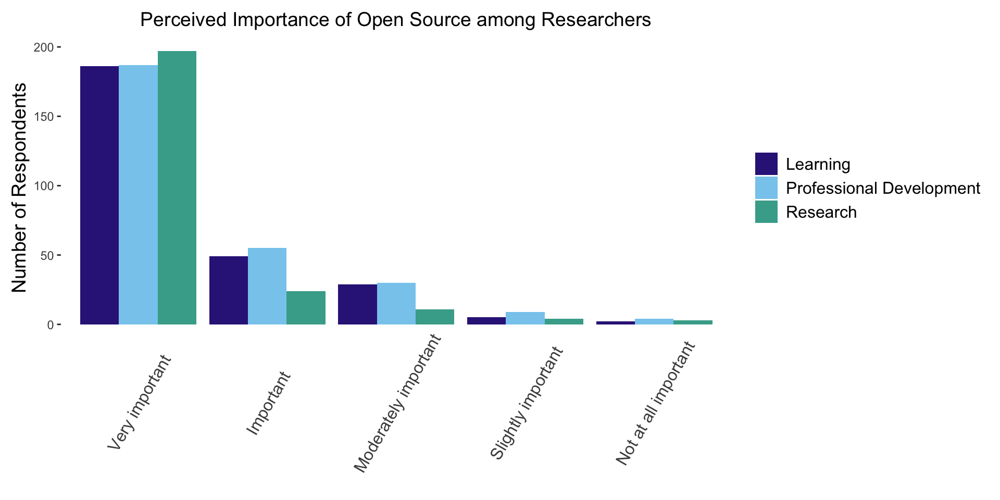
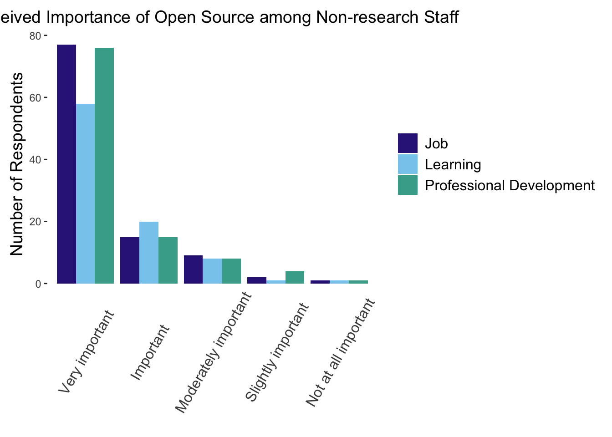

project_root <- here::here() # requires that you be somewhere in the
# project directory (not above it)
# packages
suppressMessages(source(file.path(project_root, "scripts/packages.R")))
# functions and objects used across scripts
suppressMessages(source(file.path(project_root, "scripts/utils.R")))Importance of open source
Overview
This script creates bar plots from question 2 on the survey, which is about the perceived importance of open source for different job categories and different tasks.
Import packages and utilities
Load data
data <- load_qualtrics_data("deidentified_no_qual.tsv")Wrangle data
Let’s extract the columns we care about.
importance_and_job <- data %>%
select(
starts_with("importance_opensrc") | starts_with("job_category")
)
head(importance_and_job) importance_opensrc_1 importance_opensrc_2 importance_opensrc_3
1 Very important Very important Very important
2 Very important Moderately important Important
3 Very important Very important Very important
4 Very important Slightly important Important
5 Very important Important Very important
6 Very important Non-applicable Important
importance_opensrc_4 importance_opensrc_5
1 Very important Very important
2 Important Non-applicable
3 Very important Non-applicable
4 Important Non-applicable
5 Very important Non-applicable
6 Important Non-applicable
job_category
1 Faculty
2 Post-Doc
3 Other research staff (e.g., research scientist, research software engineer)
4 Faculty
5 Faculty
6 Other research staff (e.g., research scientist, research software engineer)Let’s reshape the data from wide to long format.
long_data <- importance_and_job %>%
pivot_longer(
cols = starts_with("importance_opensrc"),
names_to = "importance_area",
values_to = "importance_level"
)
long_data <- long_data %>%
mutate(
importance_area = recode(
importance_area,
"importance_opensrc_1" = "Research",
"importance_opensrc_2" = "Teaching",
"importance_opensrc_3" = "Learning",
"importance_opensrc_4" = "Professional Development",
"importance_opensrc_5" = "Job"
)
)
long_data# A tibble: 1,660 × 3
job_category importance_area importance_level
<chr> <chr> <chr>
1 Faculty Research Very important
2 Faculty Teaching Very important
3 Faculty Learning Very important
4 Faculty Professional Development Very important
5 Faculty Job Very important
6 Post-Doc Research Very important
7 Post-Doc Teaching Moderately important
8 Post-Doc Learning Important
9 Post-Doc Professional Development Important
10 Post-Doc Job Non-applicable
# ℹ 1,650 more rowsSTOP!!! At this point, I manually compared this data frame to the results table in Qualtrics to make sure the columns (e.g. importance_opensrc_1) correspond to the options I expect (e.g. “Research”). I had to use peoples’ email addresses to make sure I was comparing the same rows in each table. I assumed that the variables were ordered by their order on the survey, but you never know. In this case, my assumption was correct. I’ve commented out the code for this because it only needed to be done once.
# pii <- load_qualtrics_data("pii.tsv")
# emails <- pii %>%
# select(starts_with("stay_in_touch_email"))
# t <- cbind(emails, importance_and_job)
# subset(t, startsWith(stay_in_touch_email, "PERSONNAMEHERE"))Back to data wrangling.
Here, I removed all rows that contain an empty string in any column. Since both questions were mandatory, I’m actually only removing people who never saw the demographic questions: people who are not affiliated with UC (2) + people who are neither past nor future open source contributors (36). (2+36)*5 importance areas = 190 rows removed.
dim(long_data)[1] 1660 3long_data <- long_data %>%
filter(!if_any(everything(), ~ . == ""))
dim(long_data)[1] 1470 3Shorten this one long category name. (Other research staff (e.g., research scientist, research software engineer) becomes simply Other.)
long_data$job_category <- gsub(
"^Other.*",
"Research Staff",
long_data$job_category
)Reorder factor levels for plotting.
long_data$importance_level <- factor(
long_data$importance_level,
levels = c(
"Very important",
"Important",
"Moderately important",
"Slightly important",
"Not at all important",
"Non-applicable"
),
ordered = TRUE
)
long_data# A tibble: 1,470 × 3
job_category importance_area importance_level
<chr> <chr> <ord>
1 Faculty Research Very important
2 Faculty Teaching Very important
3 Faculty Learning Very important
4 Faculty Professional Development Very important
5 Faculty Job Very important
6 Post-Doc Research Very important
7 Post-Doc Teaching Moderately important
8 Post-Doc Learning Important
9 Post-Doc Professional Development Important
10 Post-Doc Job Non-applicable
# ℹ 1,460 more rowsBar plots
Simple bar plot for teachers
Now let’s start making some bar plots. Let’s start by making a bar plot showing how teachers rate the importance of open source for their teaching. Since we didn’t ask people “Do you teach?”, and since there was a “Non-applicable” option, we will simply assume that if they gave an answer for the “Teaching” option, they must be a teacher.
teaching <- long_data %>%
filter(
importance_area == "Teaching"
) %>%
filter(
importance_level != "Non-applicable"
)
# Remove the "importance_area" column because it's "Teaching" for every row.
teaching <- teaching %>% select(-c(job_category, importance_area))
teaching <- teaching %>%
count(importance_level, name = "Counts")
# By sheer luck, the columns are already ordered by response rates.
teaching# A tibble: 5 × 2
importance_level Counts
<ord> <int>
1 Very important 112
2 Important 41
3 Moderately important 27
4 Slightly important 7
5 Not at all important 6Now let’s make that bar chart using a function that lives in my utilities script (scripts/utils.R).
basic_bar_chart(
teaching,
x_var = "importance_level",
y_var = "Counts",
title = "Perceived Importance of Open Source for Teaching",
ylabel = "Number of Respondents (Teachers Only)",
show_bar_labels = TRUE
)
Save the plot using a function that lives in my utilities script (scripts/utils.R).
#save_plot("importance_teachers.tiff", 8, 5)Grouped bar plot for researchers
Now let’s look at researchers, and the importance categories that apply to all researchers. The importance categories again are:
Research
Teaching –> Does not apply
Learning
Professional Development
Job (For non-research staff) –> Does not apply
So we’ll make a bar plot with just those three categories that apply to all researchers. As with teachers above, we will assume that if they didn’t select “Non-applicable”, they must be a researcher.
The grouped_bar_chart function, like the basic_bar_chart function, lives in my utility script.
research_learning_pd <- long_data %>%
filter(
importance_area == "Research" |
importance_area == "Learning" |
importance_area == "Professional Development"
) %>%
filter(importance_level != "Non-applicable")
grouped_bar_chart(
df = research_learning_pd,
x_var = "importance_level",
fill_var = "importance_area",
title = "Perceived Importance of Open Source among Researchers"
)
#save_plot("importance_researchers.tiff", 10, 5)Grouped bar plot for non-research staff
This is very similar to what I did above, except the three applicable categories have changed.
job_learning_pd <- long_data %>%
filter(
importance_area == "Job" |
importance_area == "Learning" |
importance_area == "Professional Development"
) %>%
filter(job_category == "Non-research Staff") %>%
filter(importance_level != "Non-applicable")
grouped_bar_chart(
df = job_learning_pd,
x_var = "importance_level",
fill_var = "importance_area",
title = "Perceived Importance of Open Source among Non-research Staff"
)
#save_plot("importance_nrstaff.tiff", 10, 5)